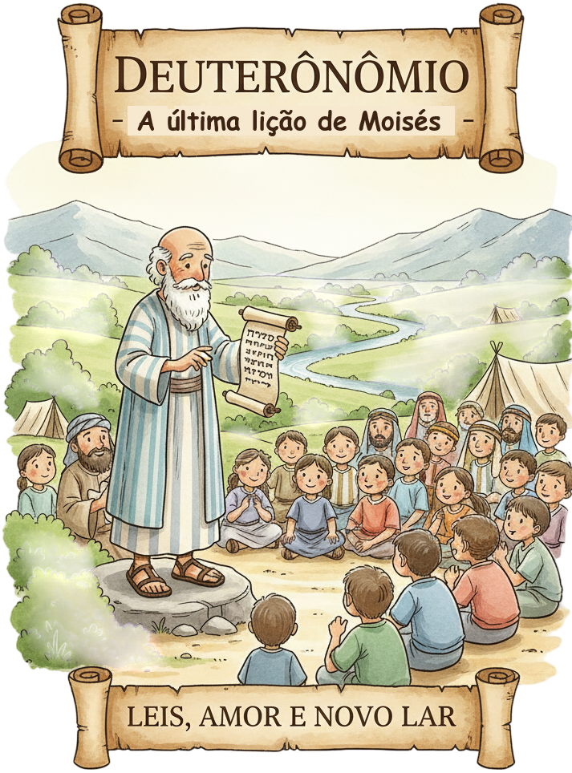
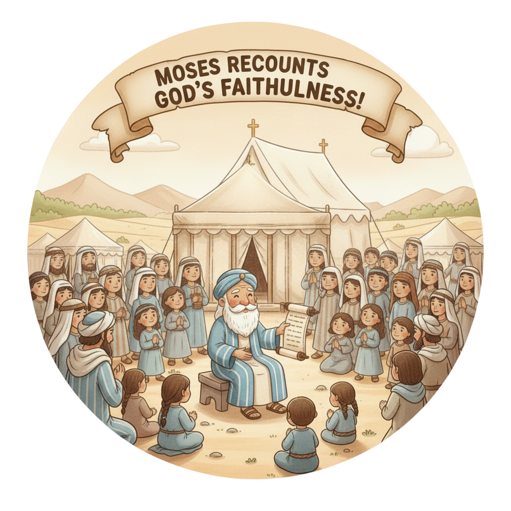
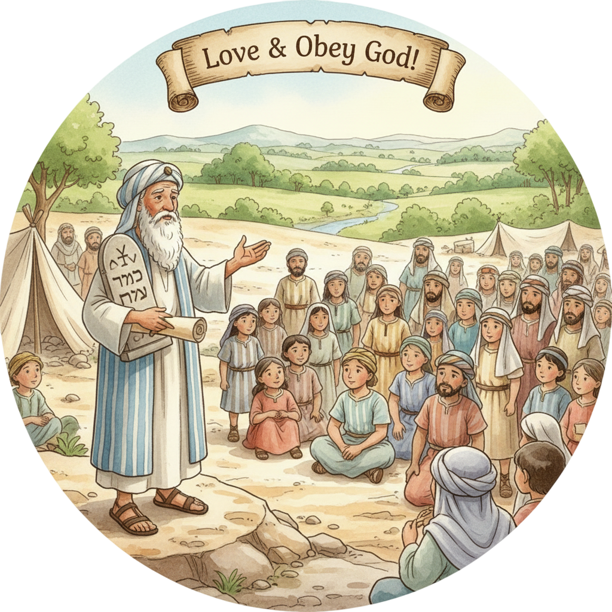
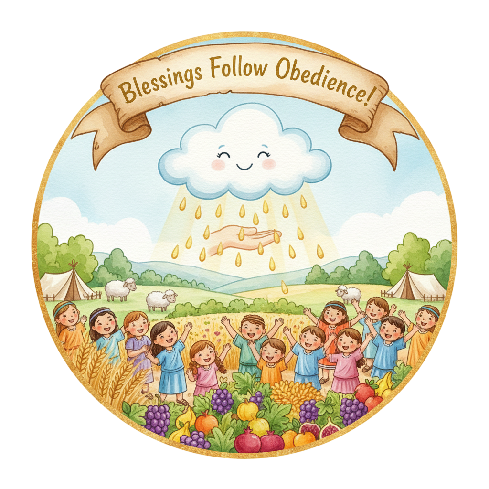
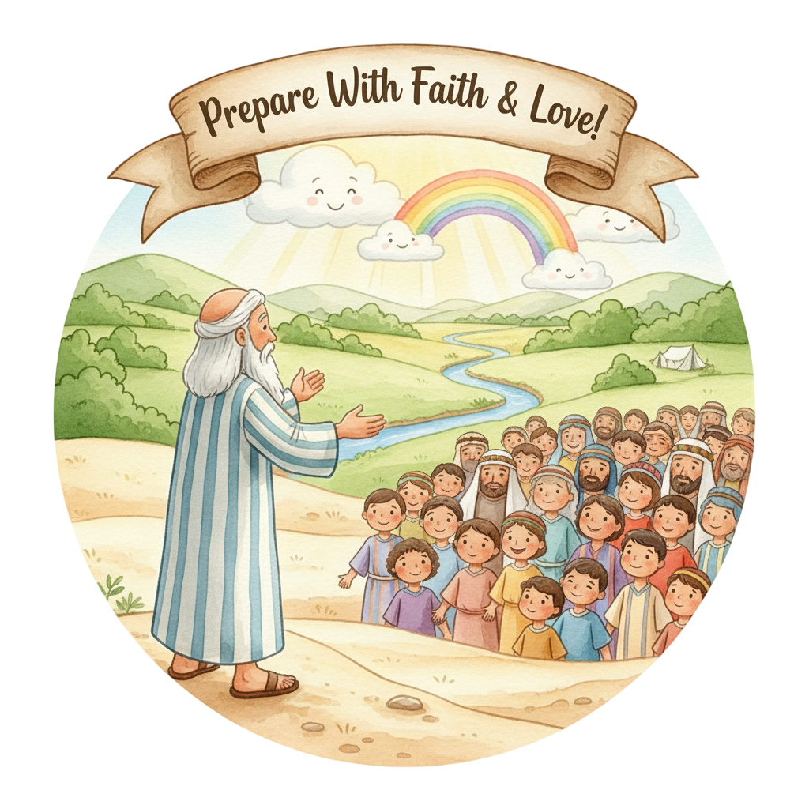
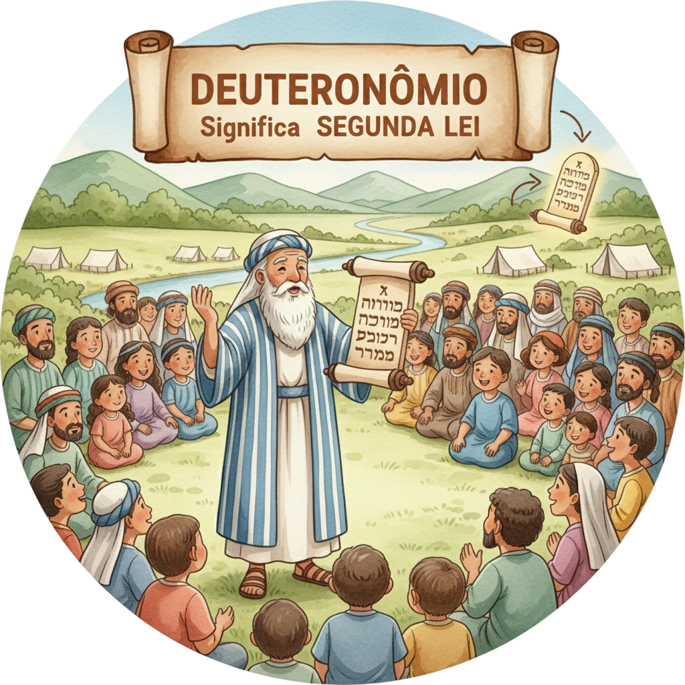

As Últimas Palavras de Moisés — Um Resumo Visual para Crianças
Quando a vida parecer difícil de entender,
Olhe para trás e veja Deus te proteger!
Ele te tirou do deserto com amor e poder,
Nunca se esqueça do que Ele fez por você!
📖 Deuteronômio 8:2 — "Lembra-te de todo o caminho pelo qual o Senhor teu Deus te conduziu."
"Amarás ao Senhor teu Deus" é o que diz a lei,
Com toda sua força, alma e coração, você verá:
Quando amamos a Deus de verdade e com fervor,
Ele nos guia sempre com seu infinito amor!
📖 Deuteronômio 6:5 — "Amarás ao Senhor teu Deus de todo o teu coração."
Moisés disse: "Escolham hoje o que vão fazer,
Obedecer a Deus é vida, podem crer!
Mas se afastar d'Ele traz só tristeza e dor,
Escolha a vida e o caminho do Senhor!"
📖 Deuteronômio 30:19 — "Escolhe pois a vida, para que vivas, tu e a tua descendência."
"Amarás ao Senhor teu Deus de todo o teu coração, de toda a tua alma e de toda a tua força."
— Deuteronômio 6:5
🌿 O que isso significa? Jesus disse que este é o maior mandamento de toda a Bíblia! Amar a Deus com tudo — mente, sentimentos e ações — não é uma das regras, é a raiz de todas as outras. Quando você realmente ama Deus com tudo, as demais coisas se encaixam naturalmente no lugar.

Com 120 anos, olhos ainda vivos e força intacta, Moisés faz seus três grandes discursos de despedida. Ele sabe que não vai entrar na Terra Prometida — mas se dedica inteiramente a preparar o povo. Que entrega!
📖 Dt 34:7 — "Tinha Moisés cento e vinte anos quando morreu; seus olhos não se escureceram, nem o seu vigor natural havia diminuído."
O espião corajoso de Números agora é o escolhido para suceder Moisés. Diante de todo o povo, Moisés passa o manto da liderança para Josué — e Deus confirma a escolha. O futuro está em boas mãos!
📖 Dt 31:7-8 — "Moisés convocou Josué... Sê forte e corajoso... o Senhor vai contigo."
Filhos e netos dos que saíram do Egito — nascidos no deserto, prontos para herdar a promessa. Moisés fala diretamente para eles: lembrem, amem, obedeçam, ensinem seus filhos. A fé precisa passar adiante!
📖 Dt 6:7 — "Inculca estas palavras a teus filhos, e delas falarás assentado em tua casa, andando no caminho."
Deuteronômio é essencialmente o discurso de despedida de Moisés — três grandes sermões ao povo. Ele revê os 40 anos no deserto, renova as leis e termina com a escolha: bênção ou maldição, vida ou morte.
📖 Dt 1:1 — "Estas são as palavras que Moisés dirigiu a todo o Israel."
O capítulo 6 traz o Shemá: "Ouve, Israel: o Senhor nosso Deus é o único Senhor." É a declaração de fé do povo de Deus, repetida todos os dias por judeus há 3.000 anos. E Jesus a citou como o maior mandamento!
📖 Dt 6:4-5 — "Ouve, Israel: o Senhor nosso Deus é o único Senhor. Amarás ao Senhor teu Deus..."
Os capítulos 27–28 são poderosos: Moisés descreve em detalhe o que acontece quando o povo obedece (bênção em tudo!) e quando desobedece (consequências sérias). É uma escolha real com consequências reais.
📖 Dt 28:2 — "Todas estas bênçãos virão sobre ti e te alcançarão, se obedeceres à voz do Senhor."
Deus leva Moisés ao topo do Monte Nebo — e ele vê toda a Terra Prometida com seus próprios olhos. Então morre, com 120 anos, em plena força. O próprio Deus o enterra. Ninguém encontrou sua tumba até hoje.
📖 Dt 34:6 — "Ele o sepultou... ninguém sabe até hoje o lugar da sua sepultura."


Quando Satanás tentou Jesus no deserto, Jesus respondeu três vezes com versículos de Deuteronômio! Dt 8:3, Dt 6:16 e Dt 6:13. Era o livro que Jesus usou como escudo — uma arma poderosa!
📖 Dt 8:3 — "Nem só de pão viverá o homem, mas de tudo o que sai da boca do Senhor."
O capítulo 6 insiste: fale de Deus com seus filhos em casa, no caminho, ao deitar e ao levantar. A fé não é só para domingos — é uma conversa diária. Cada família é uma escola de fé!
📖 Dt 6:7 — "Inculca estas palavras a teus filhos, e delas falarás... deitando-te e levantando-te."
Moisés alerta: quando você entrar na terra boa, cuidar com casas bonitas e ter fartura, não esqueça que foi Deus quem deu tudo! O perigo do coração cheio é esquecer de onde veio a bênção.
📖 Dt 8:10-11 — "Quando tiveres comido e te fartares... cuida-te que não te esqueças do Senhor."
A aliança feita no Sinai foi com os pais — mas Moisés a renova com os filhos. A fé em Deus não é herança automática: cada geração precisa fazer sua própria escolha de seguir ao Senhor.
📖 Dt 29:10-12 — "Vós todos estais hoje perante o Senhor... para entrares no pacto do Senhor."
Moisés manda escrever a Lei, colocá-la na Arca da Aliança e lê-la em público a cada sete anos. A Palavra de Deus precisa ser escrita, lembrada e ensinada — nunca pode ser esquecida!
📖 Dt 17:19 — "E a terá consigo, e a lerá todos os dias da sua vida."
Com Josué assumindo o comando e a Terra Prometida à vista, Deuteronômio encerra o Pentateuco com esperança. O futuro não é incerto — é uma promessa nas mãos de um Deus fiel!
📖 Dt 31:8 — "O Senhor mesmo vai à tua frente... não te deixará, nem te desamparará; não temas."


"Deuteronômio" vem do grego e significa "segunda lei". Não são leis novas — é uma repetição e aprofundamento das leis para a nova geração. Como uma revisão geral antes da maior aventura da vida!
Quando Satanás tentou Jesus no deserto por 40 dias, Jesus respondeu cada tentação com um versículo de Deuteronômio. Três tentações, três respostas — todas do mesmo livro! Saber a Palavra de Deus de cor é a melhor defesa que existe.
Moisés liderou o povo por 40 anos, mas por causa de um momento de desobediência (bateu na pedra em vez de falar com ela — Nm 20), Deus não o deixou entrar na terra. Mesmo assim, Deus o levou ao cume do Monte Nebo para ver toda a terra com seus próprios olhos antes de morrer. Que misericórdia!
Jesus disse que Dt 6:5 é o maior mandamento. Amar a Deus com "todo o coração, alma e força" significa que não fica nada de fora. Tem alguma parte da sua vida que você ainda não entregou a Deus?
Moisés repetia: "Lembre-se!" O perigo de ter tudo — comida, casa, amigos — é esquecer que Deus deu tudo isso. O que você pode fazer para não esquecer da fidelidade de Deus na sua vida?
"Escolhe a vida" (Dt 30:19) — Moisés não impôs, convidou. Deus dá a escolha. Toda decisão pequena que você toma no dia a dia é um pequeno "escolho a vida" ou "escolho o outro caminho". Que escolhas você está fazendo?
Escreva Deuteronômio 6:5 e memorize esta semana. Quando acordar, diga em voz alta. Jesus chamou este versículo de "o maior mandamento" — ele merece um lugar especial na sua memória!
Moisés fez uma revisão de 40 anos de fidelidade de Deus. Faça a sua: escreva 5 momentos em que você viu Deus cuidar de você ou da sua família. Guarde essa lista — ela vai te fortalecer nos momentos difíceis!
Deuteronômio manda contar as histórias de Deus para os filhos. Esta semana, conte para alguém mais novo (irmão, primo, amigo) uma história de como Deus foi fiel — na Bíblia ou na sua vida!
© 2025 - Trilho Kids
Desenvolvido com ❤️ para crianças